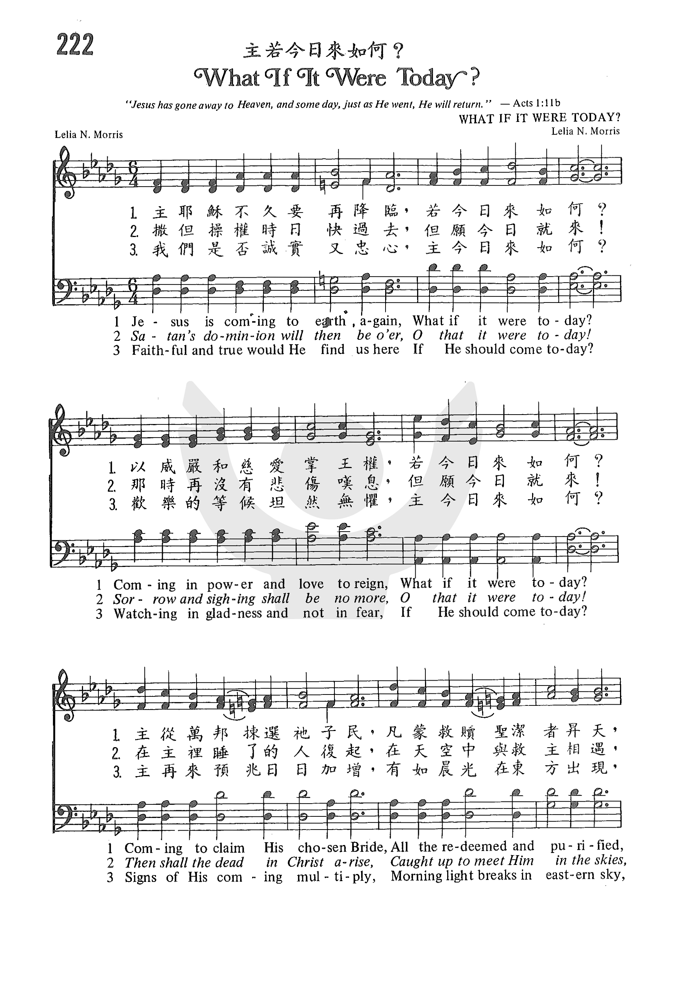

1461 GP222 What If It Were Today _C.
H. Morris 主若今日来如何
|
|
|
|
1 Jesus is coming to earth again--
What if it were today?
Coming in power and love to reign--
What if it were today?
Coming to claim His chosen Bride,
All the redeemed and purified,
Over this whole earth scattered wide--
What if it were today?
Chorus:
Glory, glory!
Joy to my heart 'twill bring;
Glory, glory!
When we shall crown Him King.
Glory, glory!
Haste to prepare the way;
Glory, glory!
Jesus will come someday.
2 Satan's dominion will then be o'er--
O that it were today!
Sorrow and sighing shall be no more--
O that it were today!
Then shall the dead in Christ arise,
Caught up to meet Him in the skies;
When shall these glories meet our eyes?
What if it were today?[Chorus]
3 Faithful and true would He find us here
If He should come today?
Watching in gladness and not in fear,
If He should come today?
Signs of His coming multiply,
Morning light breaks in eastern sky;
Watch, for the time is drawing nigh--
What if it were today?[Chorus]
Source: Baptist Hymnal 2008
#290
|
主耶穌不久要再降臨，若今日來如何？
以威嚴慈愛秉掌王權，若今日來如何？
主從萬邦揀選祂子民，凡蒙救贖聖潔者昇天，
與主同在直到永遠，若今日來如何？
撒但操權時日快過去，但願就是今日！
那時再沒有悲傷嘆息，但願就是今日！
在主裡睡了的人復起，到天空中與救主相遇，
何時眼見此榮耀日，但願就是今日！
我們是否誠實又忠心，主今日來如何？
歡樂的時候，坦然無懼，主今日來如何？
主再來預兆日日增加，有如晨光在東方出現，
儆醒等候時日快臨，主今日來如何？
副歌：榮耀，榮耀，我要歡樂歌唱；
榮耀，榮耀，擁戴我主為王；
榮耀，榮耀，快快預備主道；
榮耀，榮耀，耶穌就快來到。
|
|


http://www.sooopu.com/html/301/301131.html |
| |
|
-
-
 What If It Were Today(Jesus Is Coming To Earth Again) - Christian
Hymn & Spiritual Song Lyrics with Orchestral backing music.
What If It Were Today(Jesus Is Coming To Earth Again) - Christian
Hymn & Spiritual Song Lyrics with Orchestral backing music.
https://youtu.be/DZMXH--6kRQ
主若今日來如何? What If It Were Today? Lyric/Music: Lelia N. Morris 教唱版 簡譜
https://youtu.be/M4Mgn8J4MGs
What If It Were Today (Baptist Hymnal #195)
https://youtu.be/JiOtfme6HUo
What If It Were Today · The London Fox Choir ·
https://youtu.be/oYp8PDDdoUg
Windhoek Central SDA Church
http://www.hymncompanions.org/Feb/12/stream.php
主的美意 Sweet Will of God
倔強的我，今誠意降服，我屬祢主，仁慈基督；
這是我心切求的聲音，願行在祢的美意之中。
我今厭惡，從前的罪愆，那時路程，黑暗可憐，
但今有光照耀我的路途，故我安心賴主往前。
得勝的主，祢美意可愛，四面 環繞，保護遮蓋，
我今快樂如溪水河流，又像籠中鳥得自由。
（副歌）
父神美意，來把我包圍，直到我完全順服祢；
真神美旨，來把我包圍，直到我完全順服祢。
 (請點耳機收聽)
(請點耳機收聽)
我們所需要的天父都知道，我們所遭遇到的苦難和災禍，也是神所允許的。許多時候一個人的苦難成了千萬人的祝福。如輪椅畫家玖妮，盲詩人芬妮克羅斯比，馬德勝，殘障的杏林子劉俠等。
他們都是靠主走出陰霾，活出生命的色彩，榮神益人。
這首聖詩的作者是莫莉亞（Lelia Naylor Morris,
1862-1929）。她出生在俄亥俄州，一生都住在該州的一個小鎮馬爾他（Malta），她的教會和她家隔河相對。她的世界雖小，但她詩中神的世界是何其廣大！
莫莉亞的父親是美國南北戰爭中的軍人，解甲歸田後不久去世，留下寡婦和七個幼兒。莫莉亞的童年生活十分清苦，幸而她的老師因她聰穎伶俐，刻意栽培。她的鄰居發現她有音樂天賦，特許莫莉亞去她家練琴，因此她在十三歲時，就在教會司琴。莫莉亞的母親非常注意兒女的靈性，以聖經的原則管教他們。莫莉亞在十歲時就經歷了重生。十九歲時她和同鎮愛主的青年莫理士結婚。他們同在教會熱心事奉。當時美以美會主張追求聖潔，因此莫莉亞也不斷地清心追求主，蘊藏的聖詩恩賜也逐漸茁長。
1892年莫莉亞參加馬里蘭州山湖園的夏令會，這是她靈命上的一個轉捩點，她決心讓聖靈在她心中居首位。回家後，在她母親店中踩縫衣機時，忽然心中湧出詩句和曲調，就趕快寫下。她母親聽了，提醒她這是聖靈的感動，鼓勵她繼續寫下去。在以後的三十七年中，她一共寫了一千多首聖詩及曲譜。通常一個詩人或作曲家常有他獨特的風格，但莫莉亞的作品很少如出一轍。她從未學過和聲學與作曲，但出版家卻難得改她的稿件。莫莉亞著名的聖詩有
「讓耶穌進入祢心」（Let Jesus Come into Your Heart），
「主的愛越久越深」（Sweeter as the Years Go By），
「若今日來如何？」（What If It Were Today？），
「加利利的陌生人」（The Stranger of Galilee，可在聖樂分享的『願主賜福保護你 』CD上（第
一首）聆聽此歌）等等。
基督徒都知道主必再來，經上告訴我們沒有人知道那是何日何時，雖時常有人預測主來的日子，但全都是誤測，以致許多基督徒對主再臨的日子失去了警覺心。
「若今日來如何？」是對我們的警惕，我們是否每日都準備好祂的再臨？
若今日來如何？ What
If It Were Today?
主耶穌不久要再降臨，若今日來如何？
以威嚴和慈愛掌王權，若今日來如何？
主從萬邦揀選祂子民，凡蒙救贖聖潔者昇天，
與主同在直到永遠，若今日來如何？
撒但操權時日快過去，但願今日就來！
那時再沒有悲傷嘆息，但願今日就來！
在主�媞峇F的人復起，在天空中與救主相遇，
何時眼見此榮耀日？但願今日就來。
我們是否誠實又忠心，主今日來如何？
歡樂的等候坦然無懼，主今日來如何？
主再來預兆日日加增，有如晨光在東方出現，
儆醒等候時日快臨，主今日來如何？
（副歌）
榮耀，榮耀！我要歡樂歌唱；
榮耀，榮耀！擁戴我主為王；
榮耀，榮耀！快快預備主道；
榮耀，榮耀！願主早日臨到。
(請點耳機收聽)
中英文聖詩集參考
英文歌名 Sweet
Will of God
聖徒詩集 374
聖詩 361
青年聖歌I 50
http://www.xueshengshi.com/?p=1814
简介（一） （来源：《岁首到年终》）
Leila N. Morris, 1862-1929
专心盼望耶稣基督显现的时候所带来给你们的恩。（ 彼前 1:13 ）
耶稣再来是一个确实可靠的事。一个基督徒不冷不热、不忠心、不祷告、不长进、不圣洁，往往是因为对于耶稣再来的真理，没有清楚的认识。
彼得在上述经文中提醒我们，基督要再来，人的生命将来总是要终止的，趁你生命尚未终止以前，如果你不能在有生之年抓住这个机会来赚取灵魂，呈献给基督或者为祂建立教会，将来就不会再有机会，这也是说当主再来审判万民的时候，我们如何在祂审判台前站立得住，这是一个多么严肃的时刻！凡是活在基督再来的盼望中的人，不要浪费事奉主的机会。
本诗作者 Lelia Naylor Morris 1862 年 4 月 15 日生于俄亥俄州的 Pennsville。 1881 年与 Charles H.
Morris 结婚。夫妻在圣公会教会中极活跃。
婚后十年，开始写作圣诗。其丈夫描述她是一个安静很属灵的家庭主妇，经常诗歌灵感的产生都在厨房工作时捕捉的。 1913
年她的视力开始衰弱，一年后完全失明，但靠其毅力，仍然继续写作，一生共著述一千多首圣诗。
1 主耶稣不久要再降临，若今日来如何？
以威严和慈爱掌主权，若今日来如何？
主从万邦拣选祂子民，凡蒙救赎圣洁者升天，
与主同在直到永远，若今日来如何？
2 我们是否诚实又忠心，主今日来如何？
欢乐的等候坦然无惧，若今日来如何？
主再来预兆日日加增，有如晨光在东方出现，
儆醒等候时日快临，主今日来如何？
＊寻求神的最合适时间一定是现在。 ── 贝纳德
https://wordwisehymns.com/2017/09/18/what-if-it-were-today-2/
Words: Lelia Naylor Morris (b. Apr. 15, 1862; d. July 23, 1929)
Music: Lelia Naylor Morris
Links:
Wordwise Hymns (for another article see here)
The Cyber Hymnal
Hymnary.org
Note: Lelia Naylor married Charles Morris in 1881. She began writing sacred
songs in the 1890’s, and kept it up, even after her eyesight began to fail in
1913. Her daughter set up a blackboard twenty-eight feet long, with a huge music
staff on it, which her mother used to write, until she went completely blind.
Lelia Morris wrote more than a thousand songs–most of them after she began
suffering from a loss of her sight.
To “suppose” can mean to consider a possibility, using our imagination to answer
a “What if…?” question.
The movies do it all the time to create situations that grab our attention.
Films such as Fail-Safe (1964), or WarGames (1983) ask us to ponder a chilling
possibility: Suppose America started a nuclear war with Russia accidentally.
What then?
Christ’s parables use that technique as well. For example, suppose a farmer sows
some seed (Mk. 4:3-20). What kind of yield can he expect? Answer: It depends to
a significant extent on whether the seed lands on good and well prepared soil or
not. And the parable applies factor this to our need of hearts ready to receive
God’s Word.
The use of imagination in this way can have a practical value nearer home. Just
suppose a hurricane were to sweep through town. Are we prepared? Have we
identified a safe place to go in the event it happens? Or suppose thieves
attempt to break into our house. Do we have sufficient security protection?
Posing a supposition can help us to adjust our values. On a personal (and more
mundane) note, our son and his family live in Mexico City, where he and his wife
serve as missionaries. They’re able to visit us only occasionally, every few
years. One time a visit was expected in a couple of months time, and my wife
began to worry about all she had to get done to prepare. But I asked, “Suppose
they were to surprise us and arrive today? Would you turn them away because the
house isn’t tidy or dusted?” And the answer was, of course not. Other things
were far less important than welcoming them.
The same principle applies to the return of Christ, but for that event readiness
is vitally important. The Bible repeatedly tells us He’s coming back again.
Suppose it were to happen today? Are we ready for it? “Be ready,” Jesus warns,
“for the Son of Man is coming at an hour you do not expect” (Matt. 24:44). Are
we sure of our soul’s salvation? And would the things we’ve planned to do please
Him?
First, readiness involves trusting Christ for our eternal salvation (Jn. 3:16;
14:6; Acts 4:12). Beyond that it relates to inward character, and priorities,
and outward conduct. Are we living in obedience to His Word? Are we honouring
and serving Him with our lives?
“Denying ungodliness and worldly lusts, we should live soberly, righteously, and
godly in the present age, looking for the blessed hope and glorious appearing of
our great God and Saviour Jesus Christ” (Tit. 2:11-13).
“Therefore, since all these things [the things of this material world] will be
dissolved, what manner of persons ought you to be in holy conduct and godliness”
(II Pet. 3:11).
“We know that when He is revealed, we shall be like Him, for we shall see Him as
He is. And everyone who has this hope in Him purifies himself, just as He is
pure” (I Jn. 3:2-3).
In 1912, hymn writer Lelia Morris published a song on this theme. What If It
Were Today? poses a supposition for us all to think about.
CH-1) Jesus is coming to earth again;
What if it were today?
Coming in power and love to reign;
What if it were today?
Coming to claim His chosen bride,
All the redeemed and purified,
Over this whole earth scattered wide;
What if it were today?
Glory, glory! Joy to my heart ’twill bring.
Glory, glory! When we shall crown Him king.
Glory, glory! Haste to prepare the way;
Glory, glory! Jesus will come some day.
CH-3) Faithful and true would He find us here,
If He should come today?
Watching in gladness and not in fear,
If He should come today?
Signs of His coming multiply;
Morning light breaks in eastern sky.
Watch, for the time is drawing nigh;
What if it were today?
It’s a question worth considering.
Questions:
1) Are you ready for Christ’s return?
2) What are your plans in the meantime?
http://wordwisebiblestudies.com/what-if-what-if-it-were-today/
ROBERT COTTRILL Hymns
There are times in our lives when
asking, “What if…?” is not such a good idea. If it becomes a chronic
pattern, it can be a sign of worry and a lack of faith in God. Worriers try to
imagine every possible contingency, every possible problem which might arise.
But it is impossible to do that. We are not omniscient, as God is. Common
sense and reasonable caution are appropriate. But Christians who find
themselves obsessively dwelling on the “what if’s” of life need to return to
Scriptures such as Philippians
4:6") and First
Peter 5:7,
resting once more in the loving care of our heavenly Father.
and First
Peter 5:7,
resting once more in the loving care of our heavenly Father.
One of these is addressed in a
lovely hymn by Lelia Naylor Morris (1862-1929). The authors of our hymns come
from many walks of life. For her part, in addition to being a homemaker, Mrs.
Morris operated a ladies’ hat shop for a number of years. The Lord also used
her to write poetry and compose gospel music. Her accomplishments are all the
more remarkable considering that for most of her adult life Lelia Morris was
totally blind.
One of her songs deals with
the theme of the return of Christ, asking the question, “What If It Were
Today?” It begins, “Jesus is coming to earth again, what if it were today? /
Coming in power and love to reign, what if it were today? / Coming to claim
His chosen Bride, all the redeemed and purified, / Over this whole earth
scattered wide, what if it were today?” It is a possibility worth considering.
The Apostle Paul commended the Thessalonian Christians for living expectantly.
He says, “You turned to God from idols to serve the living and true God, and
to wait for His Son from heaven” (I
Thess. 1:9-10).
He himself lived in hope of that event in his own lifetime, assuring his
readers, “We who are alive and remain shall be caught up together with them
[the dead in Christ] …to meet the Lord in the air” (I
Thess. 4:17).
Some do not have that
expectation. Peter writes of skeptics who say, “Where is the promise of His
coming? For since the fathers fell asleep, all things continue as they were
from the beginning of creation” (II
Pet. 3:4).
But the apostle assures them the seeming delay is a sign of the patience of
God. He wants them to repent and be saved (II
Pet. 3:8-10).
In the end, His eternal plan will be fulfilled. So, what if this very day the
last trumpet sounded and God’s children were caught up into the presence of
Christ? What then? “Behold, I make all things new,” the Lord tells us (Rev.
21:5).
Then all the burdens and heartaches of this sin-cursed earth will be forever
behind us (Rev.
21:4).
What a day that will be! As Mrs. Morris’s hymn says, “Satan’s dominion will
soon be o’er…sorrow and sighing shall be no more–Oh, that it were today!”
But there is another side to it. The
Bible says, “Everyone who has this hope in Him purifies himself” (I
Jn. 3:3).
And “Looking forward to these things, be diligent to be found by Him in peace,
without spot and blameless” (II
Pet. 3:14).
Even as Christians, are we prepared to meet Him? Or would we be ashamed of how
we have been living? Or embarrassed at the activities in which we are
involved? How might our plans change, if we knew the Lord was coming back
today? Lelia Morris’s hymn asks, “Faithful and true would He find us here, /
If He should come today?” As Jesus warns His followers, “Watch therefore, for
you know neither the day nor the hour in which the Son of Man is coming” (Matt.
25:15).
What if…? It pays to be ready!
As children we often could not wait for special events to come
... a birthday ... Christmas ... summer ... a family vacation. We
would often wake up wishing that this would now be the day that we
were so eagerly anticipating. And I guess even as adults we've
often felt the same kind of excitement and anticipation about coming
special events. But do we wake up each day with the anticipation
that this could be the day that Jesus comes to take us home? What a
difference this might make in our daily lives if we really believed
this. But it is a fact that Jesus promised that He would return for
us although He hasn't revealed when that actual day might be. It
could be today and it is a possibility worth considering. The
Apostle Paul commended the Thessalonian Christians for living
expectantly. He says, "You turned to God from idols to serve the
living and true God, and to wait for His Son from heaven" (I Thess.
1:9-10). He himself lived in hope of that event in his own lifetime,
assuring his readers, "We who are alive and remain shall be caught
up together with them [the dead in Christ] ...to meet the Lord in
the air" (I Thess. 4:17). For centuries many believers have lived
with that hope but did not experience it. And there have always
been skeptics. Peter writes of skeptics who say, "Where is the
promise of His coming? For since the fathers fell asleep, all things
continue as they were from the beginning of creation" (II Pet.
3:4). But Jesus promised to return for us and it could be today
that He takes His bride home. Lelia Naylor Morris (1862-1929)
believed this and shared this hope and anticipation in this week's
hymn. A homemaker, Mrs. Morris operated a ladies' hat shop for a
number of years. The Lord also used her to write poetry and compose
gospel music. Her accomplishments are all the more remarkable
considering that for most of her adult life Lelia Morris was blind.
It is said that she authored more than 1,000 Gospel songs.
When her eyes began to fail, in 1913, her son built a 28-foot
blackboard with oversized staff lines so that she could continue
composing. In this hymn she asks the penetrating question,"What if
it, the rapture, were today?". The rapture of saints could come any
day, when He claims His chosen bride. But, in addition to the
rapture, she also talks about a future second coming when Jesus will
return to set up His kingdom here on earth - a time when He returns
to earth to reign in power. Both events are intermingled in her
writings and this can be confusing and maybe even a little
misleading. Hopefully He will soon call us home - the rapture. Then
later He will return to reign as King and bind Satan - the second
coming.
Both are events to anticipate and long for. But her question about
the timing of the rapture is a penetrating question because the
possibility of the rapture today should make us question our
priorities, activities and even our plans for today. Are we really
ready should this be the day? But it is also an encouraging
question, reminding us that at any time we believers could be taken
out of this sinful world with its challenges and disappointments to
be forever with Jesus. Are we ready?
http://barryshymns.blogspot.com/2015/06/what-if-it-were-today.html
{kind=link}